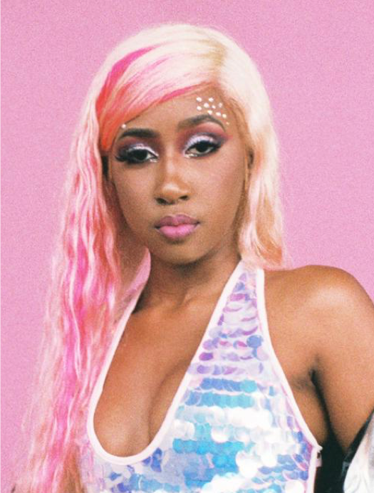

Who's That Girl?Yung Baby Tate is an artist and producer based out of Atlanta, Georgia. Some people spend their entire lives searching for their passion. Yung Baby Tate, the 22-year-old singer, songwriter and rapper out of Atlanta, GA. had a different experience, crafting her musical style from early on. Between playing the piano when she was 10, singing in her church's choir, going to performing arts schools and making up jingles for fun with her mother, Tate Farris was surrounded by artistry as a child. By 13, Tate was producing her own beats, armed only with her GarageBand app. She dropped ROYGBIV in 2015, playing on the colors in the spectrum of visible light. Her latest project, Girls, is an exploration of the many facets of being a woman, rife with charm and honesty that permeates through every song.Past PerformancesNot to toot her own horn, but Tate’s played at some seriously big events. Click here to check out any future shows.
|

|